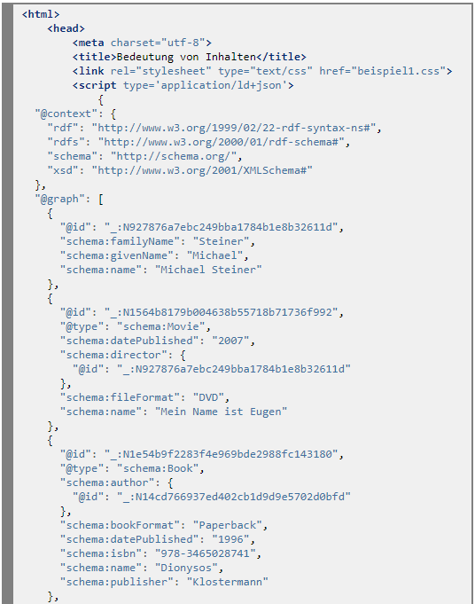

Wie "Dinge" (Bücher, Bilder, Zeichnungen, Dossiers, Ausgrabungsgegenstände, usw. leicht auffindbar gemacht werden, ist für Mitarbeitende von Bibliotheken, Archiven, Museen und Galerien klar - mit Metadaten.
Tim Berners-Lee, James Hendler und Ora Lassila haben diesen Ansatz in Bezug auf Webinhalte in der Ausgabe des Scientific American Magazine vom Mai 2001 beschrieben: "The Semantic Web - A new form of Web content that is meaningful to computers will unleash a revolution of new possibilities".
Manchmal wird das semantische Web auch als "Web 3.0" bezeichnet. Die W3C (WWW Consortium) Data Activity verwendet seit 2013 den Begriff "Web of Data".
Tim Berners-Lee und seine Mitautoren stellten sich vor, dass die Inhalte der Webseiten in standardisierter, maschinenlesbarer Form mit Metadaten ergänzt würden. Die Metadaten würden die Bedeutung der Inhalte beschreiben. Dazu wären ebenfalls standardisierte, kontrollierte Vokabulare bzw. Ontologien nötig, um sprachunabhängige, eindeutige Beschreibungen zu ermöglichen.
Die Nutzerinnen und Nutzer des semantischen Web würden dann Software-Agenten mit Suchaufträgen "losschicken", um diejenigen Webseiten zu finden, die tatsächlich entsprechende Daten enthalten.
Die Umsetzung der Vision erfolgte jedoch nicht sofort. Erst etwa seit 2012 gewinnt das semantische Web an praktischer Bedeutung; Treiber dafür ist das von den Suchmaschinenbetreibern Google, Bing, Yahoo und Yandex geschaffene Vokabular schema.org.
Im semantischen Web wird die Bedeutung der Inhalte von Webseiten mit Metadaten basierend auf dem Vokabular schema.org maschinenlesbar beschrieben.
Metadaten sind strukturierte Daten. Für die Strukturierung von Daten eignet sich die eXtensible Markup Language XML sehr gut. XML setzt klare Regeln für die Formulierung einer Datenstruktur; indem die Sprachelemente (tags) aber selbst festgelegt werden können (extensible), ist XML sehr flexibel. Wir können deshalb für unsere Zwecke die Sprachelemente dem Vokabular schema.org entnehmen.
Beispiel:
Ein Buch für die Liste der Neuerwerbungen beschrieben in XML basierend auf dem Vokabular schema.org:
Formulieren Sie in XML die Metadaten für ein weiteres Buch der Neuerwerbungsliste mit Hilfe des Vokabulars schema.org.
Wie sähen die entsprechenden Metadaten für die DVD mit dem Film "Mein Name ist Eugen" aus?
Ein in der Praxis häufig verwendetes Vokabular für "Dinge", die Bibliotheken führen, bilden die Dublin Core Metadata Initiative (DCMI) Metadata Terms. Formulieren Sie die Metadaten für das Buch mit dem Titel "Zeit des Fasans" mit Hilfe der DCMI Metadata Terms.
Die Metadaten für für ein weiteres Buch der Neuerwerbungsliste und für die DVD mit dem Film "Mein Name ist Eugen": Dokument öffnen
Die Metadaten für das Buch mit dem Titel "Zeit des Fasans" mit Hilfe der DCMI Metadata Terms: Dokument öffnen
Die Neuerwerbungsliste umfasst mehrere (sogar unterschiedliche) Medien. Dabei sind zwei unterschiedliche Medien (das Buch "Mein Name ist Eugen" von Klaus Schädelin und der Film mit demselben Titel) miteinander verknüpft (das Buch ist die Vorlage für den Film). Um solche komplexen und verknüpften (Meta-) Datensätze formulieren zu können, steht das vom W3C standardisierte, XML-basierte Resource Description Framework RDF zur Verfügung.
Beispiel:
Die Metadaten für einen Ausschnitt aus der Liste der Neuerwerbungen, beschrieben in RDF/XML mit Hilfe des Vokabulars schema.org:
Das Format RDF/XML eignet sich für die Einbindung der Metadaten in eine Webseite nur bedingt. In den Anfängen der semantischen Auszeichnung von Webseiteninhalten mit schema.org wurden eher die Formate RDFa und Microdata verwendet. Die Beispiele auf der Website schema.org illustrieren diese Formate.
Mittlerweile hat sich das Format JSON-LD (JavaScript Object Notation - Linked Data) durchgesetzt. Die Formatumwandlung von RDF/XML in JSON-LD ist einfach, es gibt dafür zahlreiche Online-Tools.
Beispiel:
Umwandlung der in RDF/XML formulierten Metadaten für die Neuerwerbungsliste in das Format JSON-LD unter Verwendung des Online-Tools rdf-translator.appspot.com:
Die Metdatenbeschreibung in JSON-LD kann nun einfach in den Text der HTML-Seite eingebunden werden, entweder im <head> oder im <body>:
